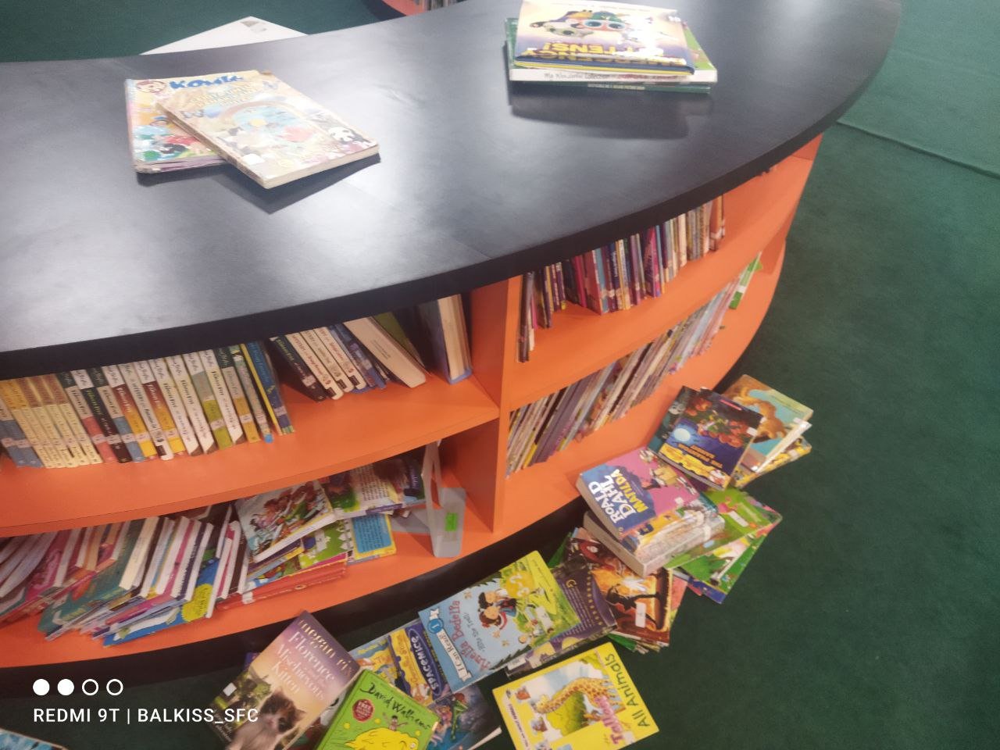
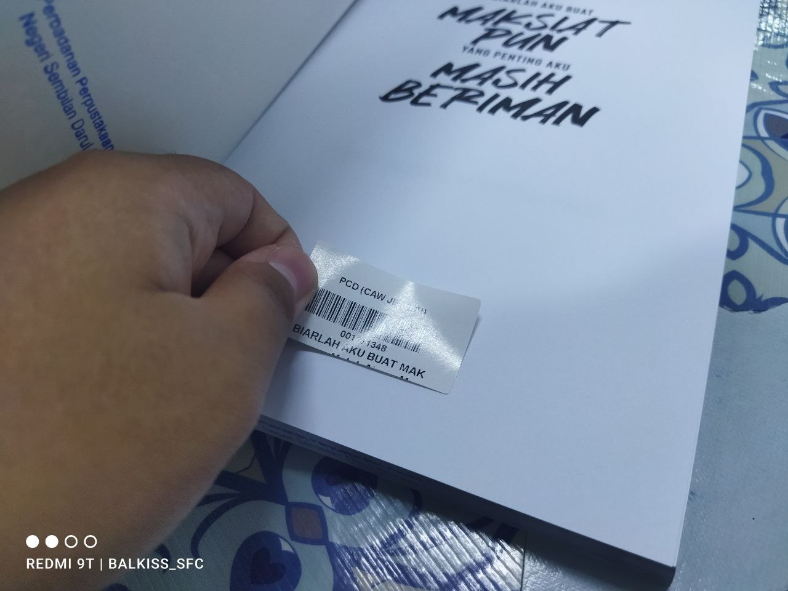
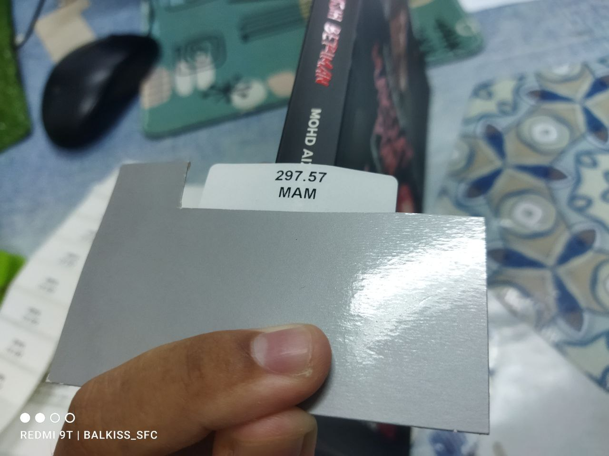
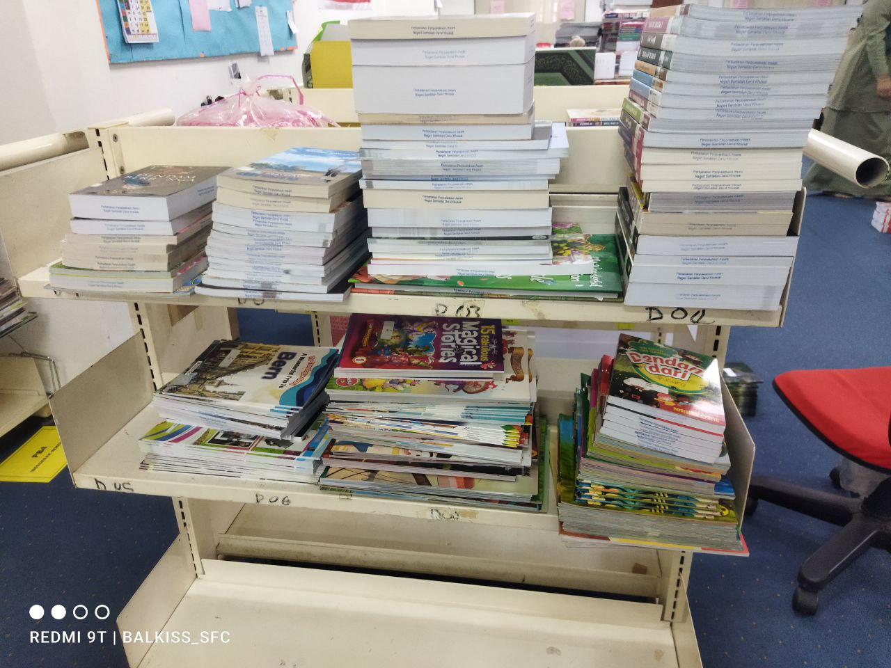

On the first day of practical training, the supervisor asked me and my friend who do the same training to fill the form first.

I just get to visit the library and get introduced to staffs in that library. At the end of the day, I was assigned to do shelving in kids section.

This process takes about an hour before going back home.
However, after 2 weeks in Seremban branch, I was transfered to Port Dickson branch because the location of the that branch library are nearer to my house and also need to learn how cataloging units works in library (only in Port Dickson branch).
The procees in cataloging units are in this order:
- Cataloging
- Stamping books
- Stick accession numbers and call number stickers
- Distribution
Then, one of the staff teach me how to do sticker for book spine and accession number of the book. Library have a few copy of the books to distribute the books to other branch library later.

Accession number stickered on title page of the book
The procedure for stick call number stickers are different. They have their own 'tool' to help librarian to stick the sticker...

Call number sticker on book spine
As you can see, this is the results after stick the stickers. Each books will be added to other library branch collections.
Usually PPANS send 14 copy of books to their branches
After stick the stickers, the books will be arraged and distribute to other branches in racks...

This is how distribution process looks like
After doing this process, I learnt how to do cataloging based on books published in Malaysia and books published overseas.
I repeated these processes for 3 weeks until returned to Seremban branch on last day of practical training.
It was a great experience and I totally learnt a lot during doing this training.
This is my experience during practical training.